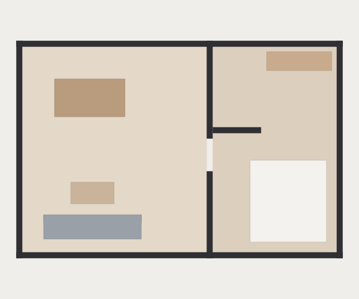
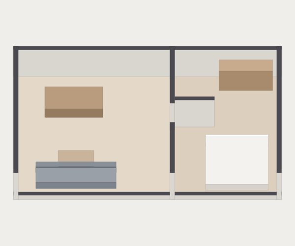
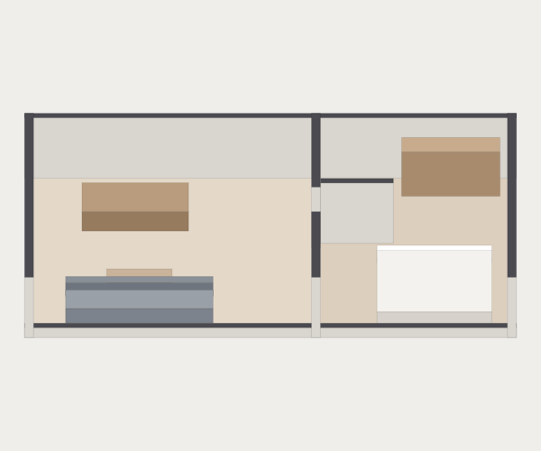
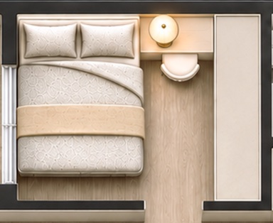
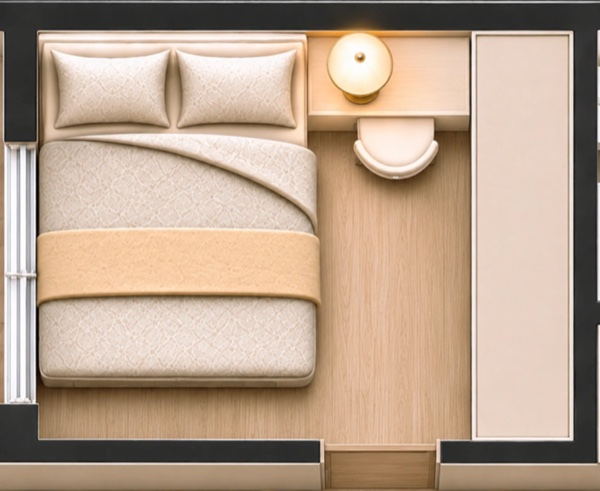
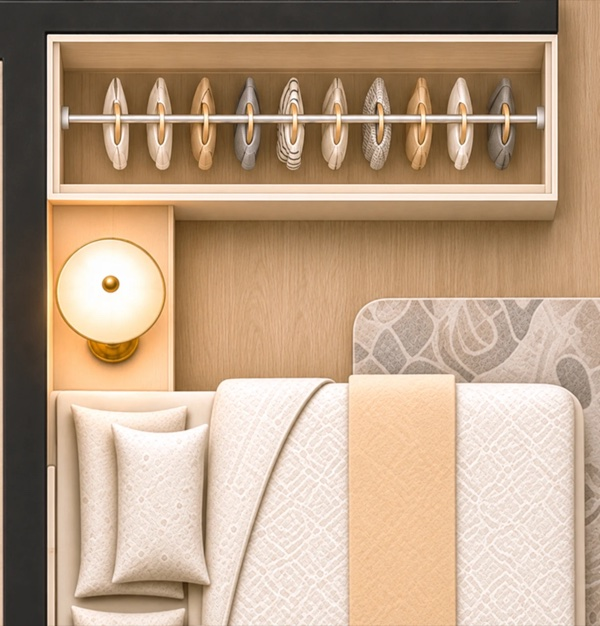
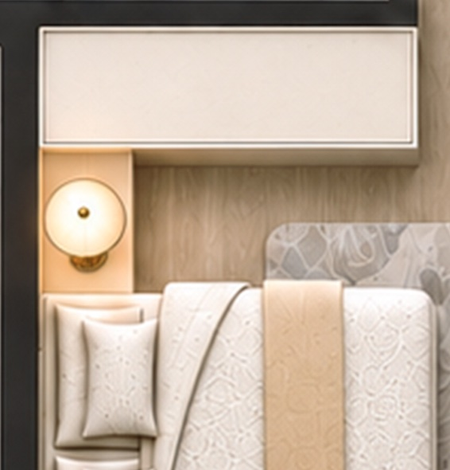
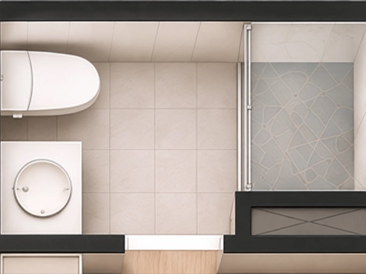
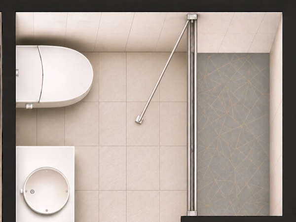

已鎖定・自動納入每次咒語
生成後仍需核對格局與物件。
✓ 已加入樓層對齊規則：樓梯、電梯、管道間與結構柱上下對齊









儲存後，下次開啟將沿用這台裝置的設定。
每次搭配一張單層平面圖；透天可改選「多層分開」。
點擊視窗外的空白處，或按 Esc 即可關閉。
單層圖直接使用；透天可選「多層分開」整張上傳，或逐層擷取後用「單層一張」。
選好生圖工具、出圖方式、視角、門片、衣櫃與玻璃門，複製完整咒語。
將該層原圖與咒語交給生圖工具，完成後核對格局。
「單層一張」的做法：一次一層，分開生成。也可以改選「多層分開」整張上傳。
先分開擷取，不整張上傳
每張保留該層完整格局
不混層、不合併成同一層
目前選項將回到初始值。已儲存的設定仍會保留，重新開啟網站時會載入。